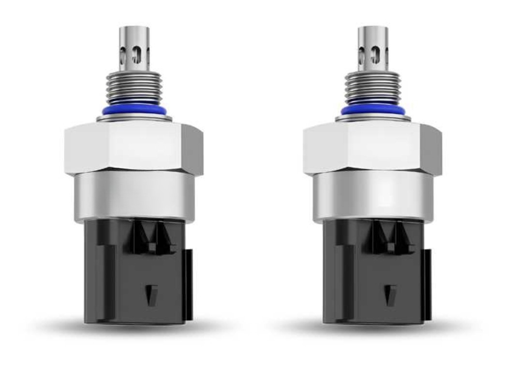

企业宣传片
企业宣传片
 传感器稳定性测试
传感器稳定性测试
 四大监测系统方案
四大监测系统方案
Core Portfolio
油品大健康，设备预测性维护解决方案。
自研在线油液监测系统、油品传感器、便携式检测仪器、润滑管理服务与云端诊断平台，覆盖设备从现场到远程的全链路状态管理。
Solutions
面向关键行业的油液监测方案
按设备类型、油品介质和运行工况配置传感器、采样单元、告警策略与诊断模型。
钢铁冶金
轧机、液压站、减速机与循环润滑系统状态监测。
石油化工
防爆场景下的污染度、含水率与磨粒趋势管理。
风电能源
齿轮箱主路与旁路循环监测，识别早期磨损风险。
船舶港口
动力系统、液压系统和大型装卸设备远程诊断。
工程机械
复杂工况下设备油品寿命和维护窗口预测。
算力液冷
液冷介质颗粒物、导电率与流体清洁度在线监测。
About Runzhi
专业的在线油液监测专家。
致力于打造可靠的润滑分析诊断产品
润智科技聚焦工业设备润滑健康管理，围绕底层传感器、在线监测终端、算法模型与云平台持续研发，让维护从经验判断转向数据驱动。
12+
了解更多
行业方案
36h快速响应
99%数据在线率

References
赋能企业润滑管理智慧化转型
大型纸业液压站在线油液监测项目
在关键液压站部署在线监测单元，持续跟踪污染度和油品老化趋势，帮助客户减少非计划停机并优化换油周期。
- 减少计划外停机次数
- 延长液压油更换周期
- 提升系统稳定运行率
ShellSinopecPetroChinaSPIC
SANYXCMGBYDCSSC
DECBaosteelGoldwindCRCC

公司动态 | 在线油液监测专家
预测性维护解决方案亮相行业大会
智能运维论坛分享传感器实践
液冷流体监测方案发布

产品动态 | 专注底层传感器研发
在线磨粒检测技术应用于风电场
液冷流体污染监测系统升级
新一代含水率传感器完成测试

最新活动 | 行业最新动向
风电齿轮箱油品监测技术白皮书
双碳背景下的设备润滑管理
智能制造现场油液数据闭环